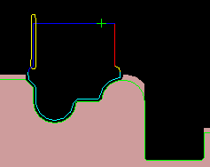

Animate the FINISH_TURN_OD operation
Animate the tool movement for the operation. Display material removal in 2D and display the tool as a solid assembly.
-
In the Program Order View of the Operation Navigator, right-click FINISH_TURN_OD and choose Tool Path→Verify.
-
Select the 2D Material Removal check box and click Play
 .
.

-
Click OK to close the Tool Path Visualization dialog box.